GitLab¶
Overview¶
From planning to production, GitLab brings teams together to shorten cycle times, reduce costs, strengthen security, and increase developer productivity. It helps the engineering teams remove toolchain complexity and accelerate DevOps adoption. GitLab provides DevOps software and version control management that is based on Git. The platform provides tools for continuous integration, security, and continuous deployment. It offers features such as built-in continuous integration and deployment, project management, code review analytics, issue trackikng, etc, which can all useful for MLOps. More details can be found in Gitlab official docs.
In this guide, we will cover following contents:
Deploy Gitlab on Kubernetes
Setup SSH keys
Uninstall Gitlab from Kubernetes
- Authentication and authorization
LDAP (Lightweight Directory Access Protocol)
OIDC (OpenID Connect)
TODO
Deploy Gitlab on Kubernetes¶
The journey of integraing Gitlab into MLOps starting from deploying it on Kubernetes. In this guide, we will use Helm.
Prerequisites¶
Before deployment, make sure following prerequisites are fulfilled:
kubectlCLI installed. You may follow the Kubernetes documentation, or follow our doc Install Kubeflow on Nimbus.Helm v3.3.1 or later installed. You may refer the Helm documentation.
Docker installed. You may refer Docer official documentation, or directly run
sudo snap install dockerif you have followed our doc Install Kubeflow on Nimbus to deploy Kubernetes cluster.(Optional) An external, production-ready PostgreSQL instance setup. This is optional, as the GitLab chart we would use in this guide already includes an in-cluster PostgreSQL deployment that is provided by bitnami/PostgreSQL by default. This deployment, however, is for trial purposes only and not recommended for use in production.
(Optional) An external, production-ready Redis instance setup. This is optional, as the GitLab chart we would use in this guide already includes an in-cluster Redis deployment that is provided by bitnami/Redis by default. This deployment, however, is for trial purposes only and not recommended for use in production.
Use Helm chart for Gitlab deployment¶
Add Gitlab to helm repo¶
After all Prerequisites are fulfilled, we can start our Gitlab deployment on Kubernetes.
First, add gitlab to helm repo.
helm repo add gitlab https://charts.gitlab.io/
There may be some warnings, and this step can be skipped if you have already have gitlab in your helm repo.
WARNING: Kubernetes configuration file is group—readable. This is insecure. Location: /home/vmware/.kube/config
WARNING: Kubernetes configuration file is world—readable. This is insecure. Location: /home/vmware/.kube/config
"gitlab" already exists with the same configuration, skipping
Update helm repo with above change.
helm repo update
And you should see successful message like below:
WARNING: Kubernetes configuration file is group—readable. This is insecure. Location: /home/vmware/.kube/config
WARNING: Kubernetes configuration file is world—readable. This is insecure. Location: /home/vmware/.kube/config
Hang tight while we grab the latest from your chart repositories...
...Successfully got an update from the "spark—operator" chart repository
...Successfully got an update from the "mlrun—ce" chart repository
...Successfully got an update from the "gitlab" chart repository
Update Complete. *Happy Helming!*
Configure and deploy¶
Before deployment, you should make some decisions about how you will run GitLab. Options can be specified using Helm’s
--set option.name=value command-line option. This guide will cover required values and common options. For a complete list of
options, read Installation command line options.
In this guide, we deploy Gitlab using following command:
helm upgrade --install gitlab gitlab/gitlab --create-namespace --namespace=gitlab \
--timeout 600s \
--set global.hosts.externalIP=<your_ingress_externalIP> \
--set global.hosts.domain=<your_ingress_externalIP>.nip.io \
--set certmanager-issuer.email=admin@example.com \
--set global.time_zone=<timezone_that_is_consistent_with_your_machine> \
--set postgresql.image.tag=13.6.0
Note the following:
All Helm commands are specified using Helm v3 syntax.
Helm v3 requires that the release name be specified as a positional argument on the command line unless the
--generate-nameoption is used.Helm v3 requires one to specify a duration with a unit appended to the value (e.g.
120s=2mand210s=3m30s). The--timeoutoption is handled as the number of seconds without the unit specification.You need to use a valid external IP (in a valid range) for field
global.hosts.externalIPandglobal.hosts.domain. These two fields are all required. (You may checksvcandingressusing[microk8s] kubectlto get a valid range for the external IP. And make sure the ingress external IP for your Gitlab has not been used by other deployed apps. In my case, it is10.64.140.46.)certmanager-issuer.emailfield is required and it is used for root user login. You may customize the value.global.time_zoneis not required and it has a default valueUTC. It is mandatory that you make sure your deployed Gitlab time zone is consistent with the time zone of your machine. Otherwise, there may be a cookie issue which would cause422error code in later web UI accessing. (You may usedatecommand to check your machine’s time zone.)You can also use
--version <installation version>option if you would like to install a specific version of GitLab.Above command enables you to deploy enterprise version. If you would like to deploy a community version, add
--set global.edition=ce.In this guide, all related
pods,svc,deployment,ingresswould be ingitlabnamespace. You may customize it.And example of above command
helm upgrade --install gitlab gitlab/gitlab --create-namespace --namespace=gitlab --timeout 600s --set global.hosts.externalIP=10.64.140.46 --set global.hosts.domain=10.64.140.46.nip.io --set certmanager-issuer.email=admin@example.com --set global.time_zone=UTC --set postgresql.image.tag=13.6.0.
Note
If you have problems with configuring external IP and if you have followed our guide Install Kubeflow on Nimbus, you may try following procedures.
1. Check your step of setting DNS service in Install Kubeflow on Nimbus. We have guided you to use command
microk8s enable dns storage ingress metallb:10.64.140.43-10.64.140.49. And in that case, 10.64.140.43-10.64.140.49 would
be the valid range of your deployed apps’ external IP.
Pick one in above range, such as
10.64.140.46. Make sure your chosen IP has not been used by other deployed apps.
Monitor the deployment¶
Monitor the deployment process using following command:
helm status gitlab
And you should see messages like below after running above helm upgrade --install command:
WARNING: Kubernetes configuration file is group—readable. This is insecure. Location: /home/vmware/.kube/config
WARNING: Kubernetes configuration file is world—readable. This is insecure. Location: /home/vmware/.kube/config
Release "gitlab" does not exist. Installing it now.
NAME: gitlab
LAST DEPLOYED: Tue Feb 21 20:36:04 2023
NAMESPACE: default
STATUS: deployed
REVISION: 1
NOTES:
=== NOTICE
The minimum required version of PostgreSQL is now 12. See https://gitlab.com/gitlab—org/charts/gitlab/—/blob/master/doc/installation/upgrade.md for more details.
=== NOTICE
You've installed GitLab Runner without the ability to use 'docker in docker'. The GitLab Runner chart (gitlab/gitlab—runner) is deployed without the 'privileged' flag by default for security purposes. This can be changed by setting 'gitlab—runner.runners.privileged' to 'true'. Before doing so, please read the GitLab Runne r chart's documentation on why we chose not to enable this by default. See https://docs.gitlab.com/runner/install/kubernetes.html#running—docker—in—docker—containers—with—gitlab—runners Help us improve the installation experience, let us know how we did with a 1 minute survey:https://gitlab.fra1.qualtrics.com/jfe/form/SV_6kVqZANThUQ1bZb?installation=helm&release=15-8
=== NOTICE
The in—chart NGINX Ingress Controller has the following requirements:
— Kubernetes version must be 1.19 or newer.
— Ingress objects must be in group/version 'networking.k8s.io/vl'.
=== NOTICE
kas:
The configuration of 'gitlab.kas.privateApi.tls.enabled' has moved. Please use 'global.kas.tls.enabled' instead. Other components of the GitLab chart other than KAS also need to be configured to talk to KAS via TLS. With a global value the chart can take care of these configurations without the need for other specific values.
Wait for a few minutes untill all required pods, svc, deployment, ingress are ready.
Check all pods are ready:
NAME READY STATUS RESTARTS AGE
gitlab—shared—secrets-1—v3s—xtcxs 0/1 Completed 0 56m
gitlab—certmanager-57c4557849—h8lxc 1/1 Running 0 2m4s
gitlab—minio-864888b9fb—mdk5c 1/1 Running 0 2m4s
gitlab—certmanager—cainjector-74cbc84b8b-2ctpb 1/1 Running 0 2m4s
gitlab—gitlab—exporter-746c7b88c6—f4skd 1/1 Running 0 2m4s
gitlab—registry-5c666cb98—pgdgh 1/1 Running 0 2m4s
gitlab—postgresql-0 2/2 Running 0 2m3s
gitlab—toolbox-8585c6f969—w2bgj 1/1 Running 0 2m4s
gitlab—redis—master-0 2/2 Running 0 2m3s
gitlab—minio—create—buckets-1—lxgm4 0/1 Completed 0 2m3s
gitlab—gitaly-0 1/1 Running 0 2m3s
gitlab—gitlab—shell-5dc7bbdd7—q7ltn 1/1 Running 0 2m2s
gitlab—gitlab—shell-5dc7bbdd7—pl7hg 1/1 Running 0 108s
gitlab—certmanager—webhook-59d745756c—cwj9p 1/1 Running 0 2m3s
gitlab—nginx—ingress—controller-6f97b6f7f7—p5jwm 1/1 Running 0 2m3s
gitlab—nginx—ingress—controller-6f97b6f7f7—s41g4 1/1 Running 0 2m3s
gitlab—prometheus—server-77b5cc946-4c4zh 2/2 Running 0 2m4s
gitlab—issuer-1—xd9xx 0/1 Completed 0 2m3s
gitlab—kas-6dc76bbbdc-72v8k 1/1 Running 0 2m4s
gitlab—kas-6dc76bbbdc—tjw8s 1/1 Running 0 108s
gitlab—registry-5c666cb98—cxjzx 1/1 Running 0 107s
gitlab—sidekiq—all—in-1—v2-75987bd8f4—q47dr 1/1 Running 0 2m1s
gitlab—webservice—default—f5f975796—c5848 2/2 Running 0 2m3s
gitlab—migrations-1—x64kq 0/1 Completed 2 2m3s
gitlab—webservice—default—f5f975796—ggd4k 2/2 Running 0 109s
Check all services are there:
NAME TYPE CLUSTER—IP EXTERNAL—IP PORT(S) AGE
kubernetes ClusterlP 10.152.183.1 <none> 443/TCP 21d
gitlab—gitaly ClusterlP None <none> 8075/TCP,9236/TCP 118s
gitlab—redis—headless ClusterlP None <none> 6379/TCP 118s
gitlab—postgresql—headless ClusterlP None <none> 5432/TCP 118s
gitlab—registry ClusterlP 10.152.183.37 <none> 5000/TCP 118s
gitlab—certmanager—webhook ClusterlP 10.152.183.168 <none> 443/TCP 117s
gitlab—kas ClusterlP 10.152.183.35 <none> 8150/TCP,8153/TCP,8154/TCP,8151/TCP 117s
gitlab—gitlab—exporter ClusterlP 10.152.183.150 <none> 9168/TCP 117s
gitlab—gitlab—shell ClusterlP 10.152.183.141 <none> 22/TCP 117s
gitlab—nginx—ingress—controller—metrics ClusterlP 10.152.183.136 <none> 10254/TCP 117s
gitlab—minio—svc ClusterlP 10.152.183.4 <none> 9000/TCP 117s
gitlab—certmanager ClusterlP 10.152.183.113 <none> 9402/TCP 117s
gitlab—postgresql ClusterlP 10.152.183.176 <none> 5432/TCP 117s
gitlab—webservice—default ClusterlP 10.152.183.92 <none> 8080/TCP,8181/TCP,8083/TCP 117s
gitlab—postgresql—metrics ClusterlP 10.152.183.66 <none> 9187/TCP 117s
gitlab—redis—metrics ClusterlP 10.152.183.138 <none> 9121/TCP 117s
gitlab—redis—master ClusterlP 10.152.183.79 <none> 6379/TCP 117s
gitlab—prometheus—server ClusterlP 10.152.183.11 <none> 80/TCP 117s
gitlab—nginx—ingress—controller LoadBalancer 10.152.183.137 10.64.140.46 80:32031/TCP,443:30751/TCP,22:31275/TCP 117s
Check all ingress are on:
NAME CLASS HOSTS ADDRESS PORTS AGE
gitlab—registry gitlab—nginx registry.10.64.140.46.nip.io 10.64.140.46 80, 443 66s
gitlab—webservice—default gitlab—nginx gitlab.10.64.140.46.nip.io 10.64.140.46 80, 443 66s
gitlab—minio gitlab—nginx minio.10.64.140.46.nip.io 10.64.140.46 80, 443 66s
gitlab—kas gitlab—nginx kas.10.64.140.46.nip.io 10.64.140.46 80, 443 66s
Check all deployments are ready:
NAME READY UP—TO—DATE AVAILABLE AGE
gitlab—prometheus—server 1/1 1 1 13h
gitlab—gitlab—exporter 1/1 1 1 13h
gitlab—minio 1/1 1 1 13h
gitlab—certmanager 1/1 1 1 13h
gitlab—certmanager—cainjector 1/1 1 1 13h
gitlab—toolbox 1/1 1 1 13h
gitlab—nginx—ingress—controller 2/2 2 2 13h
gitlab—certmanager—webhook 1/1 1 1 13h
gitlab—gitlab—shell 2/2 2 2 13h
gitlab—registry 2/2 2 2 13h
gitlab—kas 2/2 2 2 13h
gitlab—sidekiq—all—in-1—v2 1/1 1 1 13h
gitlab—webservice—default 2/2 2 2 13h
Access Gitlab web UI¶
If you did not manually set root initial password, you need to first get the password for initial login. GitLab automatically created a random password for root user. This can be extracted by the following command:
kubectl get secret <name_of_release>-gitlab-initial-root-password -n gitlab -ojsonpath='{.data.password}' | base64 --decode ; echo
If you use above commands, the <name_of_release> would be gitlab. And if you did not use namespace gitlab, remember to change it in above command.
An example would be kubectl get secret gitlab-gitlab-initial-root-password -n gitlab -ojsonpath='{.data.password}' | base64 --decode ; echo.
Copy the password.
Open you browswer, and go to the Gitlab web UI using the domain we set above https://gitlab.<domain>, i.e.
https://gitlab.<your_ingress_externalIP>.nip.io. (For example, https://gitlab.10.64.140.46.nip.io.)
And you should see following login page:
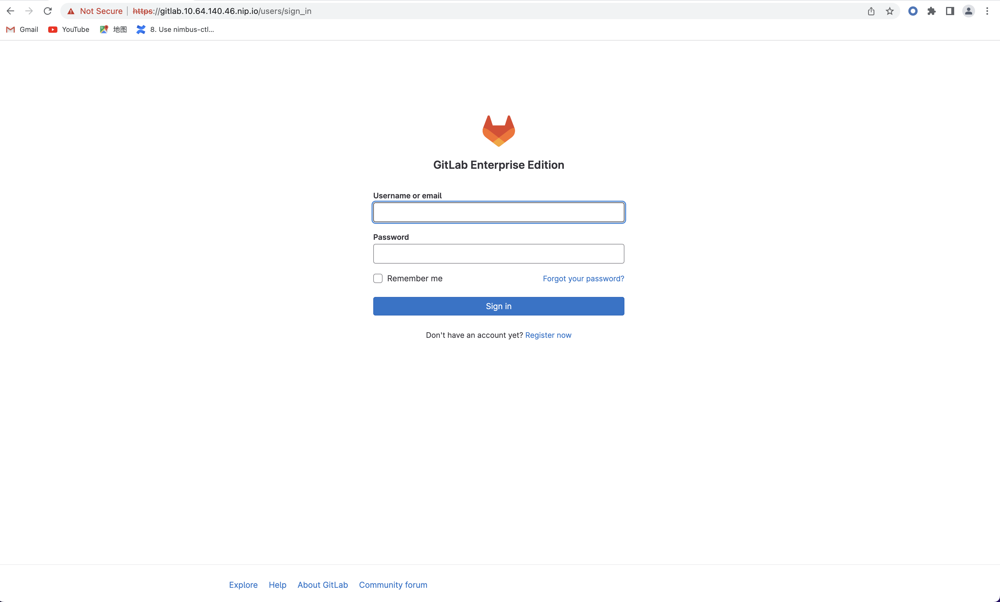Enter the email using certmanager-issuer.email we previously set in Configure and deploy. And enter the password using either you manually
set one or the one we get from secret.
Click “Sign in”, and you should be located to home page:
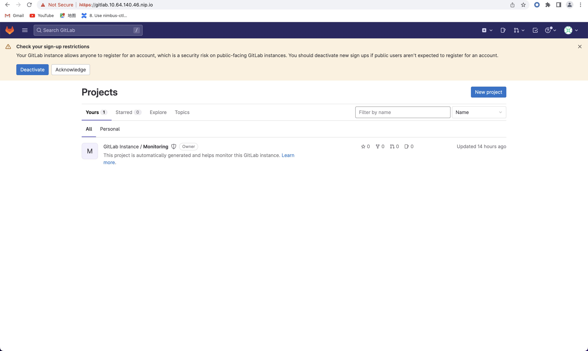Setup SSH key for projects cloning and pulling¶
As we are now able to access Gitlab through web UI, it is time to prepare our Gitlab for one of the main usages: clone and pull projects.
For privacy protection and safety, and to avoid certificate validation issues, we suggest you clone and pull projects with SSH.
Generate a new SSH key¶
First, generate a new SSH key on your machine. If you follow our doc to deploy Kubernetes and Gitlab, you should here generate the SSH key on your virtual machine.
ssh-keygen -t ed25519 -C <your_gitlab_account_email>
Note
Above email should be the one that is linked with the Gitlab account that you are planning to clone/pull projects from. For example, if you plan to have your projects in the root Gitlab account, and clone/pull those projects, above email should be “admin@example.com”, the one we set in certmanager-issuer.email field in Configure and deploy.
And you should see outputs like below:
Generating public/private rsa key pair.
Enter file in which to save the key (/home/vmware/.ssh/id_rsa): <press_enter_for_default_save_path>
Enter passphrase (empty for no passphrase): <press_enter_for_empty_or_enter_your_passphrase>
Enter same passphrase again: <press_enter_for_empty_or_enter_your_passphrase_again>
Your identification has been saved in /home/vmware/.ssh/id_ed25519
Your public key has been saved in /home/vmware/.ssh/id_ed25519.pub
The key fingerprint is:
SHA256:xxxxxxxxxxxxxxxxxxxxxxxxxxxxxxxxxxxxxxxxxxx <your_email>
The key's randomart image is:
+---[RSA 4096]----+
| E o+X +=o =|
| B % B.+o+.|
| O X B . |
| . o * * o |
| S o * o|
| . = +.|
| o =. |
| o. |
| .. |
+----[SHA256]-----+
For questions about passphrase, please refer to Github official documentation.
Add your SSH key¶
In the command execution output above, you can see the saved place of the public key. In above case, it is /home/vmware/.ssh/id_rsa.pub. Remember to change it in
to your own saved file in following commands.
cat the SSH key fingerprint.
cat /home/vmware/.ssh/id_ed25519.pub
Copy the SSH key fingerprint.
Go to Gilab in your browser. Click the account icon in the right-top cornor. And go to “Edit profile”.
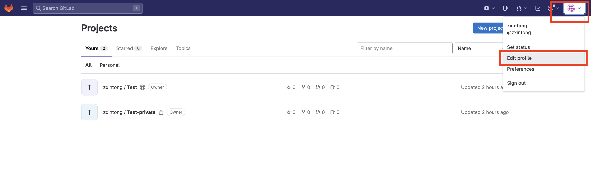Click “SSH Keys” in left panel (“User Settings”). And copy your newly generated SSH key fingerprint to the box. Set the title, usage type, and expiration date.
Click “Add key”.
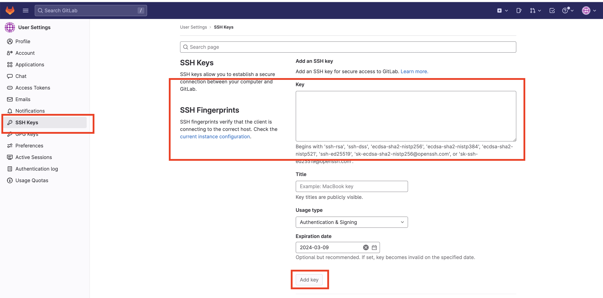A successfully added SSH key should be like below:
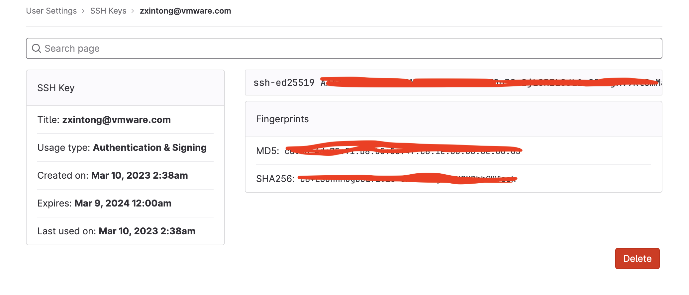For more information about SSH keys, please refer to Github official documentation.
Now, you can clone/pull projects with SSH.
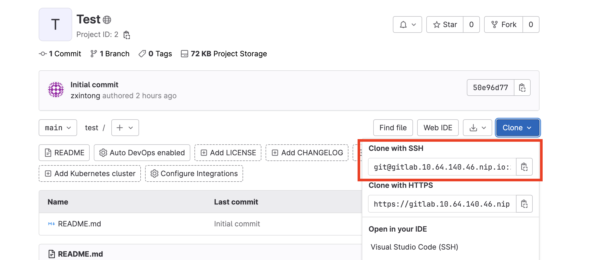Authentication and authorization¶
GitLab can integrate with a number of OmniAuth providers and external authentication and authorization providers. In this documentation, we would introduce you to how to integrate your deployed Gitlab with:
LDAP (an external authentication provider)
- OIDC (OmniAuth providers)
Gitlab
TODO
Integrate LDAP¶
GitLab integrates with LDAP (Lightweight Directory Access Protocol) to support user authentication. This integration works with most LDAP-compliant directory servers, including:
Microsoft Active Directory
Apple Open Directory
Open LDAP
389 Server
Attention
GitLab does not support Microsoft Active Directory Trusts.
Users added through LDAP can authenticate with Git using their LDAP username and password. The LDAP DN (distinguished name) is associated with existing GitLab users when:
The existing user signs in to GitLab with LDAP for the first time.
The LDAP email address is the primary email address of an existing GitLab user. If the LDAP email attribute is not found in the GitLab user database, a new user is created.
If an existing GitLab user wants to enable LDAP sign-in for themselves, they should:
Check that their GitLab email address matches their LDAP email address.
Sign in to GitLab by using their LDAP credentials (username/password).
Prerequisites¶
Make sure below prerequisites are satisfied before moving on.
A setup LDAP server.
Configure Gitlab for LDAP¶
We would assume you deploy Gitlab using Helm chart, as guided in Deploy Gitlab on Kubernetes.
First, export the Helm values to get the configurations of our previously deployed Gitlab.
helm get values gitlab > gitlab_values.yaml
Now we have the configurations of our previously deployed Gitlab in file gitlab_values.yaml. Edit this file to add LDAP configuration.
Note that the LDAP configuration is mainly in appConfig.ldap.
USER-SUPPLIED VALUES:
certmanager-issuer:
email: admin@example.com
global:
appConfig:
ldap:
allow_username_or_email_login: false
preventSignin: false
servers:
main:
label: LDAP
host: 10.117.0.26
port: 636
base: dc=vmware,dc=com
encryption: simple_tls
uid: uid
verify_certificates: false
hosts:
domain: 10.64.140.46.nip.io
externalIP: 10.64.140.46
time_zone: UTC
postgresql:
image:
tag: 13.6.0
Following configuration settings are noted here:
allow_username_or_email_login: If enabled, GitLab ignores everything after the first@in the LDAP username submitted by the user on sign-in. If you are usinguid: 'userPrincipalName'onActiveDirectoryyou must disable this setting because theuserPrincipalNamecontains an@.preventSignin: Disable it to allow users sign in using LDAP credentials through web UI. Sometimes, people prefer to prevent using LDAP credentials through the web UI when an alternative such as SAML is available. If that is the case,preventSigninfield should be set totrue.label: REQUIRED. A human-friendly name for your LDAP server. It is displayed on your sign-in page.host: REQUIRED. IP address or domain name of your LDAP server. Ignored when hosts is defined. The above configuration uses the IP of a LDAP server setup internally in VMware. You may change it.port: REQUIRED. The port to connect with on your LDAP server. Always an integer, not a string. Two commonly used ports are389and636(for SSL). Ignored when hosts is defined. You may need to use HTTPS, and therefore 636 is used in above configuration.base: REQUIRED. Base where we can search for users. You should get this value based on the setting details of your LDAP server.encryption: REQUIRED. Encryption method. Usually,simple_tlsis used for port636whileplainis used for port389.uid: REQUIRED. The LDAP attribute that maps to the username that users use to sign in. Should be the attribute, not the value that maps to theuid. Does not affect the GitLab username.verify_certificates: Enables SSL certificate verification if encryption method isstart_tlsorsimple_tls. If set to false, no validation of the LDAP server’s SSL certificate is performed. Defaults to true.
To view more configuration setting and attribute information, please refer to official documentations on configuration settings and attributes.
Save the changes in gitlab_values.yaml. And apply these changes to upgrade the Gitlab.
helm upgrade -f gitlab_values.yaml gitlab gitlab/gitlab
This may take some time. Please wait patiently.
Sign in through LDAP¶
After successfully upgrading the Gitlab and integrating the LDAP configurations, first double check if all pods, services, deployments, and ingresses are on and ready, as discussed in Monitor the deployment.
Important
Some pods (such as webservices) may need some time to integrate those changes. Please wait patiently and make sure everything is ready.
Go to Gitlab web UI. Now, you should be able to see LDAP sign in.
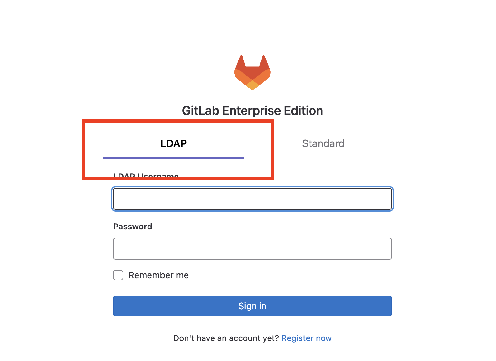Sign in with your LDAP credential.
Important
In this guide, we use the LDAP server setup VMware internally setup. So the username and password is directly our company username/password. If you use a different LDAP server, such as a LDAP server you setup on your own, you should check your own LDAP credential.
Sometimes, based on your own settings, you may encounter message saying that your signin is in pending status as Administrator/Admin’s approval is needed. If that is your case, sign in the root account through “Standard” sign in, using the email we configured in Configure and deploy and password we get in Access Gitlab web UI.
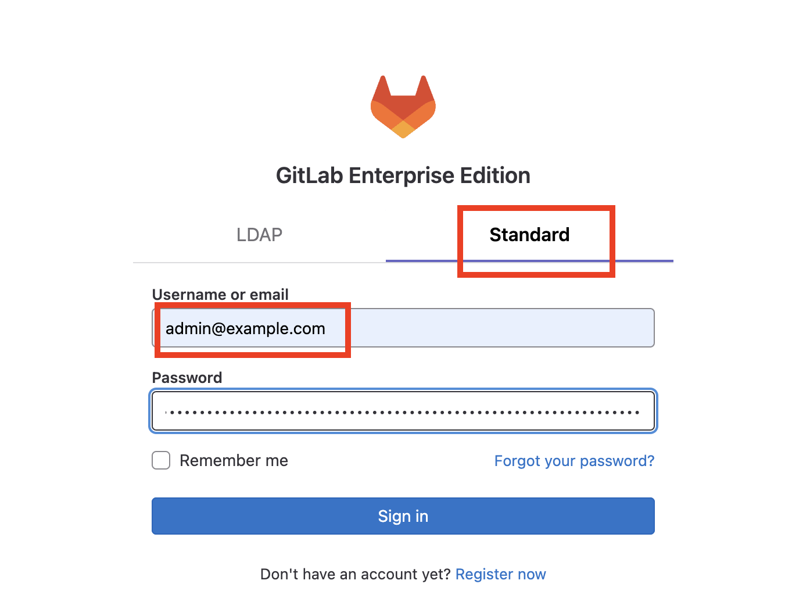Click on the menu bar on left-top cornor, next to the Gitlab logo. And click “Admin”.
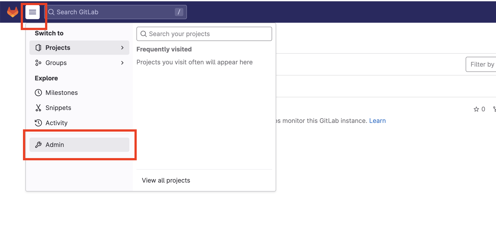Click “Users” in the left panel. And go to “Pending approval” to see users that needs approval from Admin.
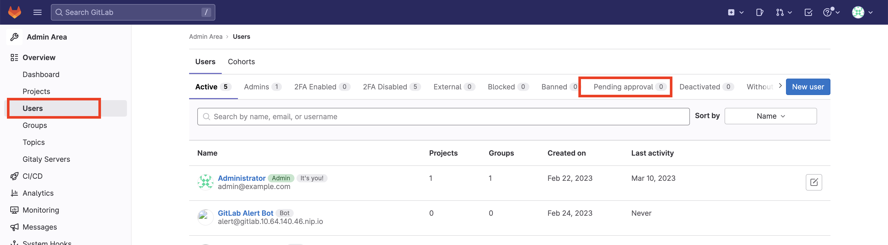Approve your LDAP user.
Sign out the root account, and re-login using your LDAP credential. This time, you should be all set!
Configure LDAP initially during installation¶
You can also configure LDAP in initial helm install command. Below is an example:
helm upgrade --install gitlab gitlab/gitlab \
--timeout 600s \
--set global.hosts.externalIP='10.64.140.46' \
--set global.hosts.domain='10.64.140.46.nip.io' \
--set postgresql.image.tag='13.6.0' \
--set global.time_zone='UTC' \
--set certmanager-issuer.email='admin@example.com' \
--set global.appConfig.ldap.servers.main.label='LDAP' \
--set global.appConfig.ldap.servers.main.host='10.117.0.26' \
--set global.appConfig.ldap.servers.main.port='636' \
--set global.appConfig.ldap.servers.main.uid='uid' \
--set global.appConfig.ldap.servers.main.base='dc=vmware\,dc=com' \
--set global.appConfig.ldap.servers.main.encryption='simple_tls' \
--set global.appConfig.ldap.servers.main.verify_certificates='false' \
--set global.appConfig.ldap.preventSignin='false' \
--set global.appConfig.ldap.allow_username_or_email_login='false'
Note
For details about gitlab configuration, refer to Configure and deploy.
Integrate OIDC: Github¶
GitLab can use OpenID Connect (OIDC) as an OmniAuth provider.
To enable the OpenID Connect OmniAuth provider, you must register your application with an OpenID Connect provider. The OpenID Connect provides you with a client’s details and secret for you to use.
In this section, we would introduce how to use Github as an OIDC provider and integrate it with Gitlab.
Prerequisite¶
Make sure following prerequisites are satisfied before moving on.
A Github account.
Create a Github OAuth app¶
We first create an OAuth app in Github.
Go to Github. Sign in to your Github account. Click on your accont icon on right-top corner. And click “Settings”.
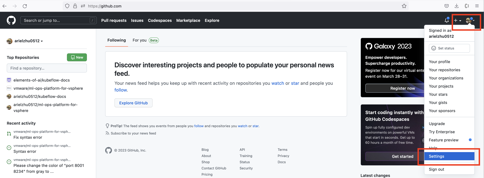On the left panel, scroll down to the bottom, and click “Developer settings”.
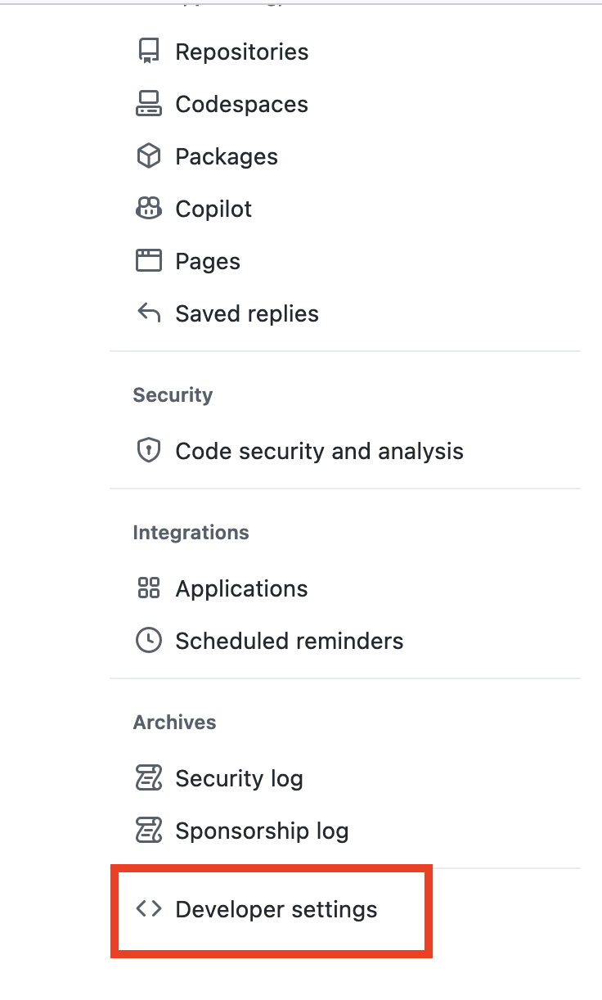On the left panel, click “OAuth Apps”. And click “New OAuth App”.
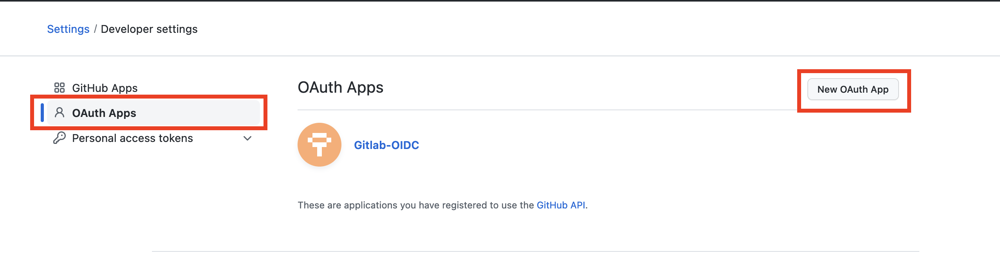Enter an application name.
For the “Homepage URL”, enter the URL of your deployed Gitlab, i.e. https://gitlab.<external_ip>.nip.io if you deployed Gitlab
following our guide Deploy Gitlab on Kubernetes.
For the “Authorization callback URL”, the format, by default, should be https://<app_url>/users/auth/<openid_connect>/callback.
<app_url> should be the URL of your deployed Gitlab. And the <openid_connect>, in our case, should be github.
Click “Register application”.
You should be able to see your registered OAuth App then.
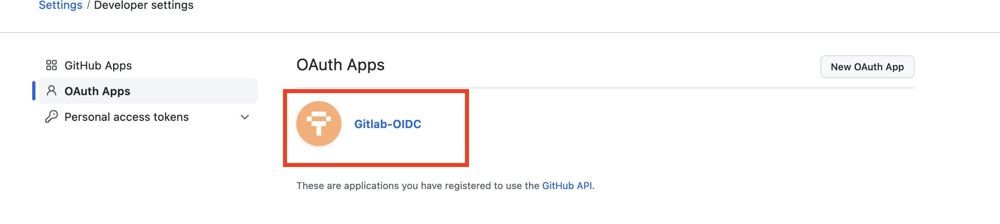Get OAuth App ID and secret¶
Click on your App.
You should be able to directly see your Client ID. Save this client ID. This would be used later.
To get your Client secret if you do not have one, click on “Generate a new client secret”. Save this client secret. This would be used later.
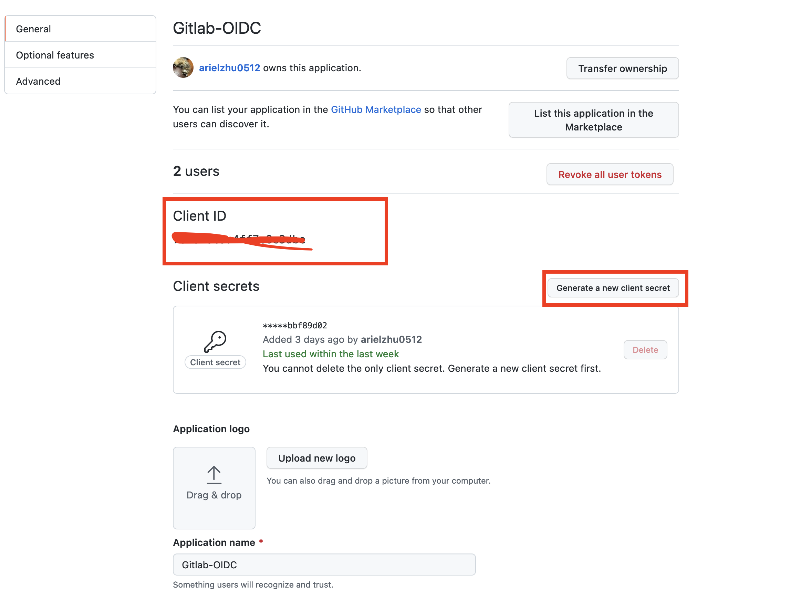Create a secret for Github OAuth configuration¶
As our Github OAuth App is ready, we can now configure this OIDC provider.
Create a YAML file called. You may name it provider.yaml.
name: github
label: Github
app_id: <Github_OAuth_App_Client_ID>
app_secret: <Github_OAuth_App_Client_Secret>
args:
scope: "user:email"
Create a secret for this provider configuration.
microk8s kubectl create secret generic -n <NAMESPACE> <SECRET_NAME> --from-file=provider=<YAML_FILE_NAME>
An example of above command can be microk8s kubectl create secret generic -n default gitlab-oidc-github --from-file=provider=provider.yaml.
Configure Gitlab for Github as OIDC provider¶
We can now configure our Gitlab to integrate Github as OIDC provider.
Export Gitlab configurations. You may skip this command if you have already done so.
helm get values gitlab > gitlab_values.yaml
The configuration values of your Gitlab is now saved in gitlab_values.yaml. We need to edit this file to add configurations for
Github as OIDC provider. Changes are mainly in appConfig.omniauth.
USER-SUPPLIED VALUES:
certmanager-issuer:
email: admin@example.com
global:
appConfig:
omniauth:
allowSingleSignOn:
- github
autoLinkLdapUser: false
enabled: true
providers:
- key: provider
secret: gitlab-oidc-github
hosts:
domain: 10.64.140.46.nip.io
externalIP: 10.64.140.46
time_zone: UTC
postgresql:
image:
tag: 13.6.0
A few things are noted here:
allowSingleSignOn: Enable the automatic creation of accounts when signing in with OmniAuth. Input the name of the OmniAuth Provider. In this case, it would be github.autoLinkLdapUser: Can be used if you have LDAP/ActiveDirectory integration enabled. When enabled, users automatically created through OmniAuth will be linked to their LDAP entry as well. You may change above to true. Above is set for testing purpose.providers:providersis presented as an array of maps. See GitLab documentation for the available selection of Supported Providers. This property has two sub-keys:secretandkey.key: Optional. The name of the key in thesecretcontaining the provider block generated in Create a secret for Github OAuth configuration. Defaults toprovider.secret: REQUIRED. The name of the Kubernetessecretcontaining the provider block generated in Create a secret for Github OAuth configuration. In above secret generating example command, we set the name asgitlab-oidc-github. You may need to change it based on your own case.
Save the changes in gitlab_values.yaml. And apply these changes to upgrade the Gitlab.
helm upgrade -f gitlab_values.yaml gitlab gitlab/gitlab
This may take some time. Please wait patiently.
Sign in with Github¶
After successfully upgrading the Gitlab and integrating the LDAP configurations, first double check if all pods, services, deployments, and ingresses are on and ready, as discussed in Monitor the deployment.
Important
Some pods (such as webservices) may need some time to integrate those changes. Please wait patiently and make sure everything is ready.
Go to Gitlab web UI. Now, you should be able to see Github sign in.
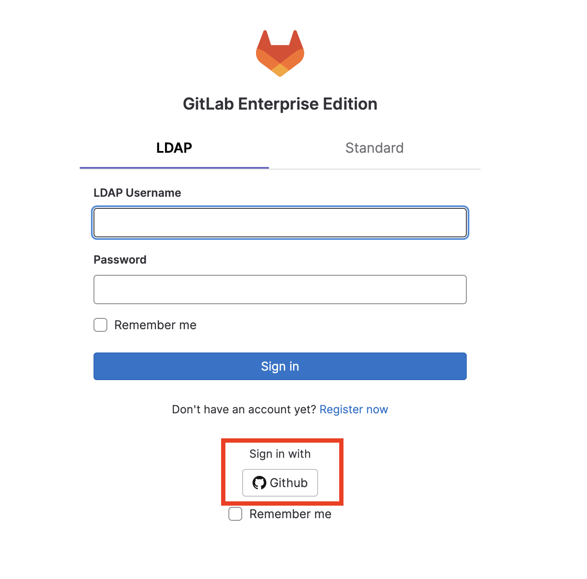Click on it. And you should be directed to Github sign in page.
Enter your Github sign in credentials. And authorize Gitlab to use Github for sign in.
Important
If you set autoLinkLdapUser to be false in above configuration, here you may need to use Github with a different email as the
one used for LDAP. Otherwise, you may encounter message saying that Email already exists. Recover your password.
After entering your Github login credentials and authorizing, you should come to Gitlab home page. If you encounter message saying that signin is in pending status as Administrator/Admin’s approval is needed, please refer to Sign in through LDAP for detailed instruction.
Configure Github OIDC initially during installation¶
You can also configure Github as OIDC provider in initial helm install command. Below is an example:
helm upgrade --install gitlab gitlab/gitlab \
--timeout 600s \
--set global.hosts.externalIP=10.64.140.46 \
--set global.hosts.domain=10.64.140.46.nip.io \
--set postgresql.image.tag=13.6.0 \
--set global.time_zone=UTC \
--set certmanager-issuer.email=admin@example.com \
--set global.appConfig.omniauth.enabled='true' \
--set global.appConfig.omniauth.allowSingleSignOn[0]='github' \
--set global.appConfig.omniauth.autoLinkLdapUser='false' \
--set global.appConfig.omniauth.providers[0].secret=gitlab-oidc-github \
--set global.appConfig.omniauth.providers[0].key=provider
Uninstall Gitlab¶
To uninstall Gitlab, run following command:
helm uninstall gitlab -n gitlab
Troubleshooting¶
422 error code on web UI after login¶
After clicking “Sign in”, instead of being guided to Gitlab home page, one sees 422 The change you requested was rejected error. Below
are some possible reasons:
Time zone and clock of your deployed Gitlab is inconsistent with your machine (local or virtual machine, depending on which one you have used to deploy Gitlab). This would cause some cookie problems. Check your machine’s time zone (using
datecommand, for example), and use--set global.time_zone=<your_machine_timezone>inhelm installstep.Cookie issues. Clear your browser’s cookies.
- External IP is not set properly.
Run
[microk8s] kubectl get svc -n defaultto make sure the Gitlab ingress controller has a valid external IP allocated. If its external IP is in “pending” status, you should use[microk8s] kubectl logs,describe, orget -o yamlto see if there is any problem in IP allocation.The external IP you configured for Gitlab may not be in the valid range.
The external IP you configured for Gitlab may have already been used by other deployed apps.
httpandhttpsissues. You should usehttpsinstead ofhttps.Domain issues. In some tutorials, you may see domain
example.com,xip.io, etc. It may depend on your environment and network configurations. In my case, the working version is<externalIP>.nip.io. And to access Gitlab on web UI, the one to be used would behttps://gitlab.<externalIP>.nip.io:443.
Kubernetes cluster unreachable¶
You may encounter following error after running helm install:
Error: Kubernetes cluster unreachable: Get "http://localhost:8080/version?timeout=32s": dial tcp 127.0.0.1:8080: connect: connection refused
If this is your case, first run command:
[microk8s] kubectl config view --raw > ~/.kube/config
And then redo the helm install command.
Server certificates verification failed¶
You may meet following error while trying to clone/pull projects
fatal: unable to access 'https://gitlab.10.64.140.46.nip.io/xxxxx/xxxxxx.git/': server certificate verification failed. CAfile: none CRLfile: none
Make sure you are cloning the project with SSH, instead of HTTPS. Refer to section Setup SSH key for projects cloning and pulling for how to setup SSH keys and clone projects with SSH.